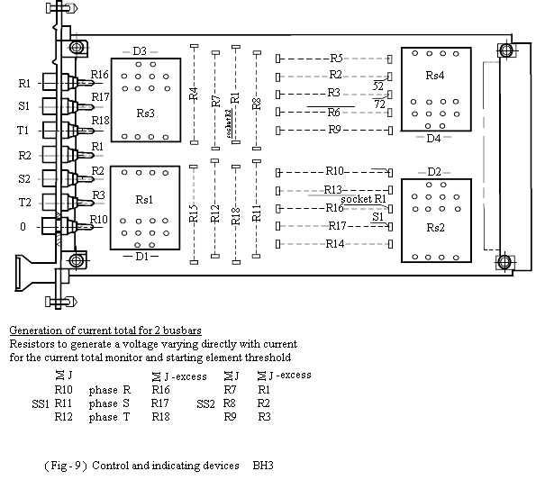

|
||||
| Equipment Bus-Bar Differential RELAY Telefunken AEG |
Document No: BBP-000-r0 | |||
| Issued to: Networks | ||||
| Status: Draft | ||||
| Procedure: Testing Procedures |
Approved Date: | |||
| Date to be Reviewed: | ||||
Introduction
This procedure details the testing procedures I1, which recommended to be carried out on an annually bases as indicated by Y1 in the title block.
The AEG bus-bar protection is fig (1a-1b-1e) intended for:
Extreme selectivity, so the only faulty bus bar section is isolated.Very short operating time.
Absolute security against spurious operation, to eliminate unnecessary tripping.
Supplementary devices are integrated into the bus bar protection system can be employed for protection against circuit breaker and feeder protection failure. It is suitable for medium – high, high and extra – high –voltage systems.
Safety Precautions
A work permit must be issued, the qualified maintenance staff should carry the suitable safety category.
Safety fence with caution marks surrounding work area is required.
Wear your safety equipment as helmet, shoes, breathing mask, safety glass...etc.
Manual block to interrupted tripping circuits.
Make sure that CT's secondary circuits are shorted, check there is no current from CT's.
Block any disturbance alarms or fault recorder associated with this protection.
Tools and Equipment
Secondary injection test set.
Ammeter, Voltmeter, Test leads.
Work to be Carried Out
Steps to Prepare for Relay Testing
Review technical reference material, manufactures manual.
Obtain a copy of relay setting filed maintenance file.
Inspect all c.t secondary circuits and all cabling supplying the relay.
Use the station drawing to isolate the following:
Testing the Relay
Testing Procedure
Test of isolating position signal on BA3 for each feeder :- Fig (2a – 2b)
Checking of isolating on and off information signal by measuring on p.c. b. of BA3 cord by using 4 measuring.
|
Device |
Close | Open | Minus |
| Isolator 1) | C24 | C25 | C28 |
| Isolator 2) | C26 | C27 | C28 |
You will get 10V reading after the filter.
If you did not get the right reading for the isolator position, you must check the terminals from 1-5 on the terminals strip or you can check on the filter board of each feeder.
Internal Checks
Measuring of Feeder Threshold Values
Measuring of monitoring Currents
Measuring of I General Starting Current
Phase Comparison test
Switching of DC supply
L.E.D test
Press the button “ LED-prolong” on the BP0 all LED’S must be signaling
( fig-6)
Automatic Testing
Open all isolators
Press " start self – checking test “ button.
Test must run during the test the “test” LED must light up and the
“obstruction” relay operate. After conclusion of the test , there must no
longer be a signal present .
Close all isolators and repeat test.
Continuous monitoring
Put Columbus .Bus plug for FT into position “ M” Extract isolating plug in the plus of in solter at the terminal strip.
After the time delay set on card BP11 the LED’S of the corresponding feeder ( isolator) an FT must light up.
Put Columbus plug for FA into position “ M”, interrupt control circuit of trip relay Draw out .The corresponding trip relay card BH5 resp.BH6or the amplifier cardBU3After a short time delay the FA and corresponding feeder LED’S must light up.
Put Columbus plug for FK into position " M " makes a coupling between Bus bars via isolators .After integration time the LED's for the participating bus bar bus bar and FK lights up.
Put Columbus for س I into position “M” switch one feeder onto bus bar to be tested and load associated transformers in one phase with current that is certain to cause the س I monitor threshold stage to operate (stage already tested under 3.2.2 ) after the time set on the BP11 cared, LED F س I and the LEO for the associated bus bar must light up.
Testing Device Feeder electronic
During AT running make a current in feed one feeder (
isolator in on position)
The current must exceed the set current total monitor threshold , the test
must be interrupted immediately.
External Tests
Signaling to the control room
Trip Circuits
Close the trip- circuit by putting in the corresponding plug
on terminal L 4 and press simultaneously the button PAII ( BP0) and PAI ( BA3 )
. The CB must trip.
Isolator Running Time
The integration time (BP 11) is fixed at delivery for appr. (2.4
sec.). If the isolator running time is grater resistor R 16 (BP 11) has to be
changed. R16 = 2.7 M ohms, t = 9 sec.
Current Transformer Circuits
Before switching on the main current transformers the
direction of power flow and the magnitude of the current in the individual
feeders is determined. Then per solidly coupled bus bar unit first of all
Final Setting
Connect synchronous time switch to terminal strip in accordance with circuit’s diagram and check “ start self”
Check t“ switch function with synchronous switch. 12.0 noon Daily
Continues monitoring ( setting)
Each of those zones can be switched alternatively to signal (M)or to signal and block (B)
Here the fault indication for the individual checking zones is also performed. These area:
FT : Fault in isolator position signaling (M)
FA : Fault in electronic control circuit of trip relay (M)
FK : Fault in internal simulation circuits for solid coupling conditions (B)
F∑ I : Fault in current total monitoring (B)
Mode of Protection
Each outgoing feeder can be alternatively operated in position “A” or “S” “A” duty the feeder is only switched off in the event of a trip signal for the bus bar to which it is connected if the fault current of this feeder is higher than the set feeder threshold. “S” duty the feeder is switched off in the event of a trip signal for bus bar to which it is connected, independent of the magnitude of the current in this feeder.“ The operating mode is selected for each feeder on the associated BA3 "
Setting In Operation
Put in all plugs (except L4) at terminals.
All ct’s are connected and and 1= 0 ( fig – 9)
No signal or blocking is there.
Final start of the automaticL4, which feeds the DC, supply for the trip relay
Testing of the back up protection type I
As the testing of the back up protections usually takes place which testing of the
bus bar protection .
The following tests are to be carried out within a suitable place ( preferable
at the end of the internal checks). For testing the Sam tools and instrument as
for the bus bar protection are required.
Draw out the plug which responsible for D.C supply of the trip relays.
Draw out signaling plugs ( exempt minus ) on the terminals L1,L2 and L3
Test the blocking button on the BR0 ( fig –7) if blocked the LED light.
Tests
Short circuit and disconnect all ct’s (terminal strip).
Connect in series the input transformers in one phase of this busbar section and load with a current, which exceeds the feeder threshold, set highest.
Impress current (greater than 1 starting).
Busbar protection trips.
Reverse current direction in the feeder to be tested.
Busbar protection gives no trip.
CB Failure Protection
Relay Failure Protection
Switch on test current .Switch on general staring signal from the protection of the feeder with the reversed current direction ( L3,terminal 2 )
After 100 ms base time and the present time on the timing stage T2 of the associated BP2 card .A trip signal is given especially for this feeder.
After the time which is set on T3 a busbar trip occurs ( T2 and T3) are running in parallels T3 must be greater than T2 )
Single and common trip are signaled via LED’S on the corresponding BA3 cards.
Put in all plugs at 1, L2 and L3
Connect CT’s ( check 1 at BA3)
Put in the plug on terminal L4, which feeds the D.C supply for the trip relays.
Return Relay and Associated equipment to service
Return relay to service by removing the test lead connections from the relay.
Any equipment associated with the relay has been isolated should be returned
to service As:
* Breaker trip coils.
* Breaker failure scheme associated with this relay.
* Disturbance alarms and fault recorder associated with this relay.
* Check that CT secondary are in normal condition.
Request Power line be Returned Service
Take crossed readings of all AC currents supplied to the relay and compare them to those for normal load conditions.
Check that readings agree with station meters: (A, V,
MW, MVAR, Power factor)
Fig (3)

Measuring values of feeder threshold (ASW) and total current monitoring
(F∑1) for the busbar protection
|
CT |
NO |
hasASW |
RFEI |
plaseASW |
SFEI |
plaseASW |
T FEI |
|
|
|
|
|
|
|
|
|
Measuring values of total current for the general starting
signal (∑1)
66KV
| Feeder | SS | Total CT (A) | R (A) | S (A) | T (A) | Primary current (A) |
|
|
I |
|
|
|
|
|
|
|
II |
|
|
|
|
|
|
|
III |
|
|
|
|
|
|
|
IV |
|
|
|
|
|
220KV
| Feeder | SS | Total CT (A) | R (A) | S (A) | T (A) | Primary current (A) |
|
|
I |
|
|
|
|
|
|
|
II |
|
|
|
|
|
|
|
III |
|
|
|
|
|
|
|
IV |
|
|
|
|
|
66KV
|
SS |
R (mv) |
S (mv) |
T (mv) |
|
I |
|
|
|
|
II |
|
|
|
|
III |
|
|
|
|
IV |
|
|
|
220KV
|
SS |
R (mv) |
S (mv) |
T (mv) |
|
I |
|
|
|
|
II |
|
|
|
|
III |
|
|
|
|
IV |
|
|
|